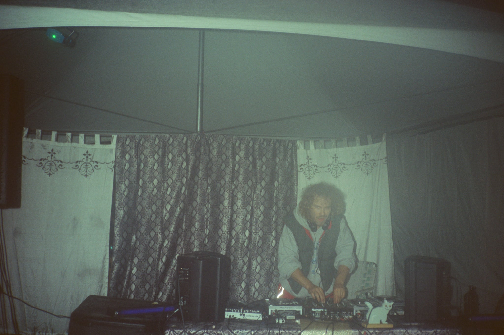
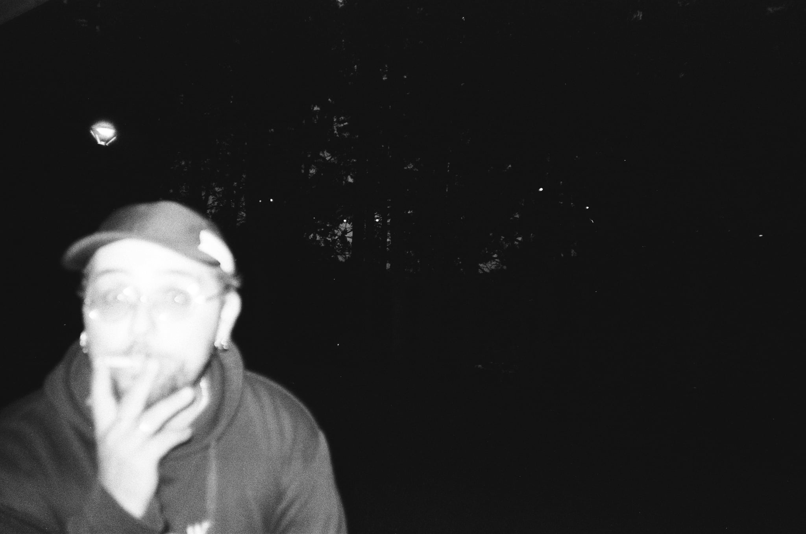

djs

Jupiter Jazz
électro · trance · dub technoTexte de présentation à écrire — parcours, influences, ce qu’on entend dans ses sets.

Dj Stoopify
électro · house · groovyTexte de présentation à écrire — parcours, influences, ce qu’on entend dans ses sets.

Chiennasse
hard groove · électro · bpm élevésTexte de présentation à écrire — parcours, influences, ce qu’on entend dans ses sets.